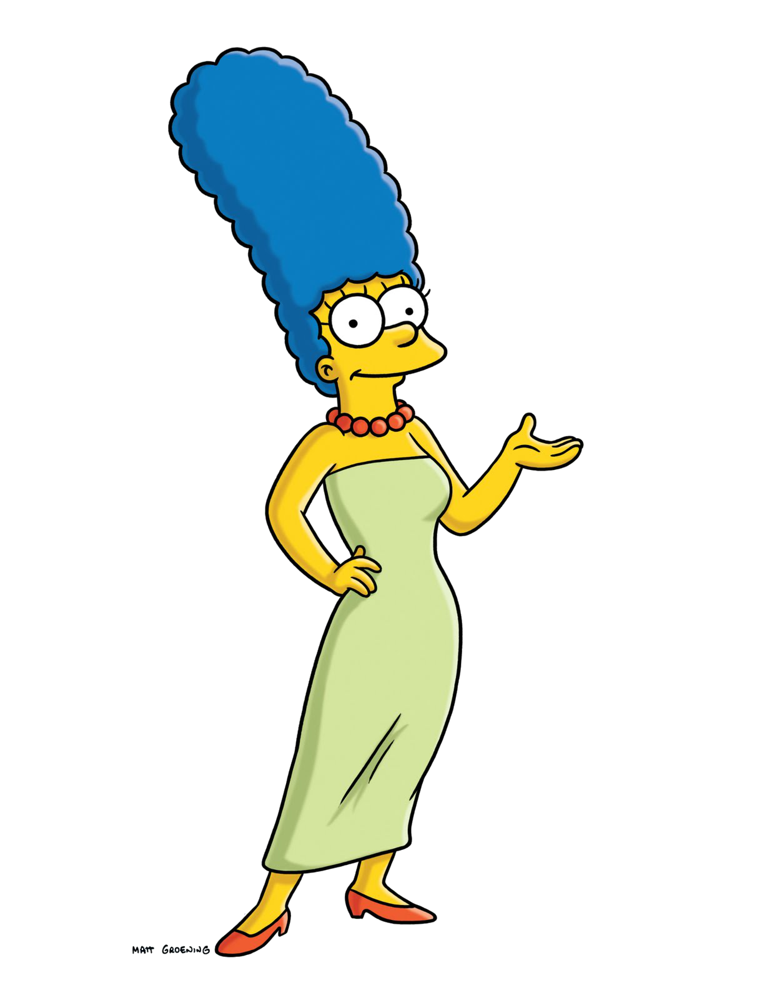
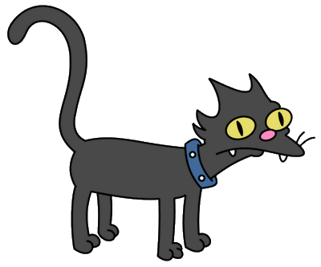

el padre, trabaja como inspector de seguridad en la planta de energía nuclear de Springfield en el sector 7G, posición que contrasta con su personalidad descuidada y bufonesca.

Marge, una estereotípica ama de casa y madre con la cual tiene tres hijos.

un problemático chico de 10 años
Lisa, una precoz activista de 8 años.
Maggie, un bebé que no habla pero se comunica succionando un chupete

perro, Santa's Little Helper

gato, Snowball II